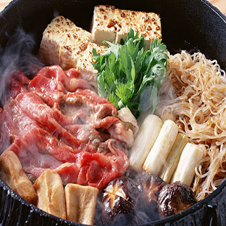
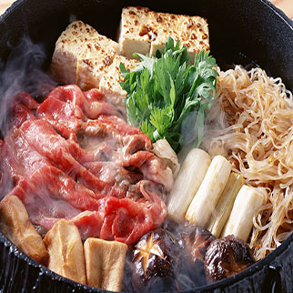
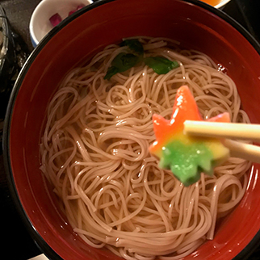
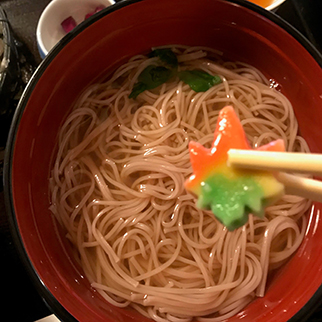

Японска еда
Национальная японская кухня одна из самых оригинальных и своеобразных в мире. Еда здесь очень простая, тепловая обработка минимальна, а максимальное внимание уделяется сохранению естественного вида и вкуса продукта. Иногда продукты вообще не готовят, а только нарезают. И никогда не смешивают слишком много ингредиентов. Трапеза в традиционной кухне Японии — это настоящий ритуал. Меню должно отличаться в зависимости от времени года, а все участники трапезы придерживаются строгих и сложных правил.
 



Существует японское выражение о том, что в блюде всегда должно быть «что - то из гор и что - то из моря». Горы представлены в виде большого разнообразия овощей, а также неизменной основы любого блюда – риса. Птица и мясо также употребляются в пищу, хотя они не так важны и популярны, как скромные соевые бобы, которые встречаются в виде соевого творога (тофу), мисо, ферментированной соевой пасты, используемой для супов и заправок, а также в форме широко распространенного соевого соуса.
Главные элементы японской кухни формируются путем слияния нескольких важных факторов. Сезонные и региональные продукты задают общий тон блюда. Исторические влияния можно заметить в выборе продуктов, способах приготовления и обычаях употребления определенных продуктов в определенные времена года. Представление еды на столе также играет огромную роль – особенное внимание уделяется деталям, цвету, форме и балансу. Еда является «витриной» для представления японских видов искусства в создании фарфоровой, керамической, плетеной, лакированной и бамбуковой посуды.
Основное национальное блюдо Японии — вареный рис. Его не солят, но зато сопровождаю разнообразными соусами и приправами. Рис подают в отдельной посуде практически ко всем блюдам как гарнир, а часто используют и как самостоятельное блюдо, изменяя вкус при помощи приправ. Многие другие блюда делаются на его основе.
 



Есть два вида японской еды: классическая и современная. Классической я отношу рамен, рис, дайкон, всякие интересные овощи, странной консистенции, такие блюда вы можете попробовать при храмах, например, в Киото в Daigo-ji или каких нибудь отдаленных от города местах типо Hitachi парка. Это такая очень традиционная японская кухня. И очень на любителя. Зато обслуживать вас будут девочки в кимоно и кушать вы будете очень по-японски. В таких местах еще бывают очень красивые чайные, попробуйте там чай матча.
И есть очень вкусная японская еда. К ней я отношу якисоба, окономияки, сашими, суши, сукияки. В Японии очень популярны рестораны, где на столе будет стоять кастрюля или плитка, где вы сами сможете приготовить себе еду. Обязательно загляните в какую нибудь “окономиячную”. Если вдруг по дороге вам захочется перекусить, то в любом небольшом супермаркете family inn или 7-eleven можно купить треугольник онигири с тунцом или даже со сливой. Будете в Осака обязательно зайдите в @KuunelKitchen, еда там не совсем японская, но зато очень вкусная и в японском стиле. Советовать саке не буду, совсем не мой напиток, в стране более 1500 компаний по производству саке. Если интересно, попросите в ресторане рюмочку самого популярного, чтобы понимать, что это такое. А вот пиво, слабоалкогольные и безалкогольные напитки под брендом Asahi не имеют конкурентов. Еще из традиционно японского можно попробовать вино из умэ(сливы), зимой его пьют, разбавляя с кипятком, летом добавляют лед.